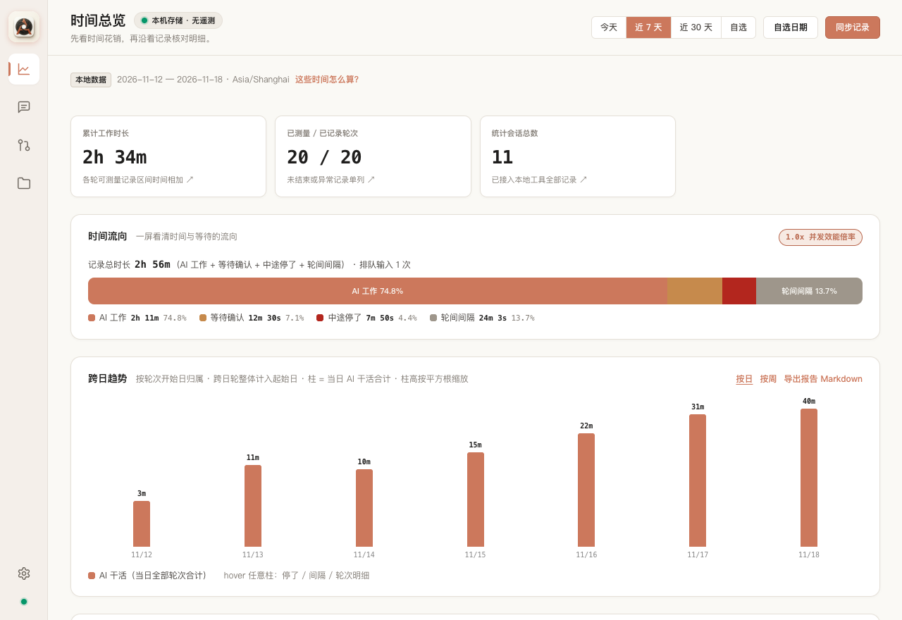
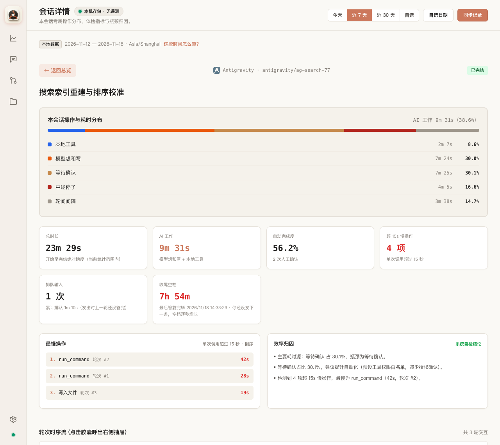
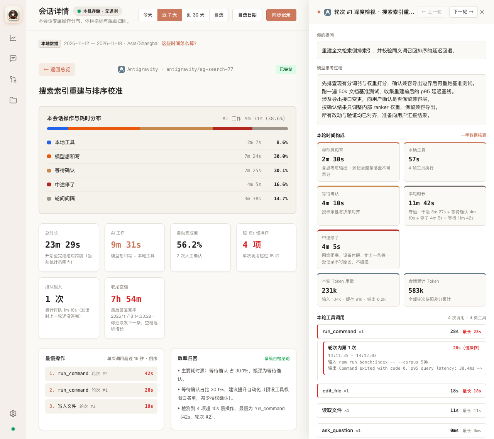
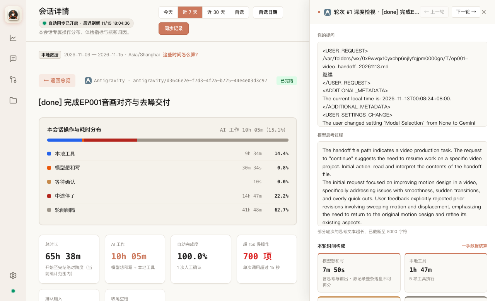
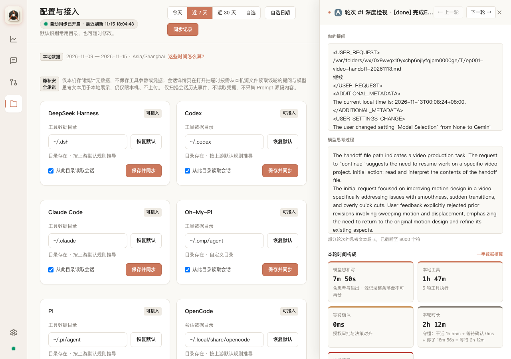

100% Local-First · Zero Telemetry · Node.js ≥ 22.15
Stop billing your idle time as AI work.
AgentTime turns local session logs from 7 AI coding agents into a conservation-verified time ledger — separating Pure Work, Review Wait, Idle Gap, and Standby down to every turn and tool call.
npx @ccclucky/agent-time
npx @ccclucky/agent-time --demo
Binds only to 127.0.0.1:8765 · Prompts & reasoning stay on disk · Never extrapolated when evidence is missing

Why Start-to-Finish Trackers Lie
Conservation identity: Pure Work + Review Wait + Idle Gap = Turn Wall Clock. Missing approval evidence is honestly marked unknown.
7 Harnesses, One Read-Only Local Ledger
Zero hooks, zero agent slowdown. Reads existing session files or SQLite databases directly.
Claude CodeJSONL · Turn & Tool spans
Codex CLIJSONL / .zst · Token diff
OpenCodeSQLite DB · Per-request
AntigravityConservation 5-state
PiActive branch topology
Oh-My-PiJSONL + history.db
DeepSeek HarnessMulti-frame .zstd

Session Detail & Autonomy KPIsSpot 15s+ slow operations and approval bottlenecks immediately.

Turn Inspector DrawerOn-demand prompt, reasoning trace, and per-call tool stack from local files.

Multi-Harness BreakdownCompare sessions, models, thinking levels, and token diffs side by side.

One-Click Local DiscoveryAuto-detects installed agent directories with live incremental sync.